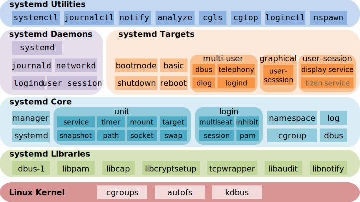

System administration with systemd
Giovanni Ciatto
References
What is systemd? (pt. 1)
systemd$\approx$ today’s most common init system for Linux systems
- but what’s an init system in the first place?
What happens when you boot a Linux system?
Overview

What happens when you boot a Linux system?
The role of the init system

The init system is the first process started by the kernel
(this is why it has PID=1)
Responsibilities
-
Starting all other processes (namely, the services):
- including the display server (e.g. X, Wayland)
- including the window manager (e.g. Gnome, KDE)
- including daemons and services (e.g.
sshd,httpd)
-
Mounting the file systems
- e.g. the home partition, the swap partition, etc.
-
Setting up the network
- e.g. starting the network manager, hence connecting to the default networks, etc.
-
Suspending/hibernating (and resuming), rebooting, and shutting down the system
What happens when you boot a Linux system?
Once the system is up and running…

The init system has:
- started all the system services
- mounted all the file systems
- set up the network
- started the display server
- started the window manager
- started the user session
OS Services and Daemons
In the context of operative systems (OS):
-
a service is a process that runs continuously in the background
- it is started and stopped by the OS (actually, by the init system), often with administrative privileges
- it offers some functionality to the user or to other services
-
in the *nix world, “daemon” is a synonym for “service”
- the term comes from Greek mythology: a daimon is a spirit that acts as an intermediary between humans and the gods
Examples of services/daemons in a Linux system
sshd(the SSH daemon) is a service that allows clients to remotely connect to the system, via the SSH protocolssh-agentis a service that manages SSH keys for the userhttpd(the HTTP daemon) is a service that serves web pages to clients, via the HTTP protocolcupsd(the CUPS daemon) is a service that manages printers, via the CUPS protocoldockerd(the Docker daemon) is a service that manages containers on a given host
Init systems
-
SysVinit (1980s—early 2000s) first family of init systems for Unix-like systems
-
Upstart (2006—2014) developed by Canonical for Ubuntu
-
runit (2004—present) used by niche Linux distributions
-
OpenRC (2007—present) used by Gentoo and Alpine Linux
-
launchd (2005—present) used by macOS, developed by Apple
-
systemd (2010—present) inspired by
launchd, used by most Linux distributions nowadays -
Comparison here: https://wiki.gentoo.org/wiki/Comparison_of_init_systems
What is systemd? (pt. 2)
systemd is a suite of system management daemons, libraries, and utilities designed as a central management and configuration platform for the Linux OS
systemd’s utilities suite
The systemd suite includes the following command-line utilities (corresponding to relevant daemon services):
-
systemctlcontrols thesystemddaemon, from which system- and user-level services can be managed -
journalctlqueries messages from thejournalddaemon, which collects and stores log messages from the kernel and services -
hostnamectlcontrols thehostnameddaemon, from which the name of the host on the network can be read/set -
loginctlcontrols theloginddaemon, which manages user sessions and seats -
timedatectlcontrols thetimedateddaemon, which manages the system clock and time zone -
localectlcontrols thelocaleddaemon, which manages the system locale and keyboard layout -
busctlcontrols thebus-proxyddaemon, which provides a D-Bus interface to the system bus -
networkctlcontrols thenetworkddaemon, which manages network configurations -
resolvectlcontrols theresolveddaemon, which manages DNS configurations
Remarks
This lecture is about the usage of systemd as the service manager for Linux
(i.e., put simply, how to usesystemctlandjournalctl)
-
… but the systemd suite is much more than that!
-
Overall, systemd is a set of tool for system administration
- you can control most aspects of a Linux system using systemd’s utilities
Beware!
-
systemd is a controversial piece of software inside the FOSS community
- it has been criticized because it arguably violates the Unix philosophy
- it has been criticized as a mission creep (i.e., it does too much) and as a feature creep (i.e., it has too many features)
- yet, it is the de facto standard for most (and most relevant) Linux distributions
-
Yet, do not expect all distros to implement/support all the features of the systemd suite
A taste of the systemd suite
before delving into the details of systemctl and journalctl
A taste of the systemd suite (pt. 1)
Hostname Management
- Get an overview with
hostnamectl --helphostnamectl [OPTIONS...] COMMAND ... Query or change system hostname. Commands: status Show current hostname settings hostname [NAME] Get/set system hostname icon-name [NAME] Get/set icon name for host chassis [NAME] Get/set chassis type for host deployment [NAME] Get/set deployment environment for host location [NAME] Get/set location for host
- See information about the current hostname with
hostnamectl statusStatic hostname: lubuntu2410-vm Icon name: computer-vm Chassis: vm üñ¥ Machine ID: 7fc69dab56a64d73b4f2ae5077df58a0 Boot ID: 7b52bffe735b47a18135db49790a4cc9 Virtualization: oracle Operating System: Ubuntu 24.10 Kernel: Linux 6.11.0-9-generic Architecture: x86-64 Hardware Vendor: innotek GmbH Hardware Model: VirtualBox Firmware Version: VirtualBox Firmware Date: Fri 2006-12-01 Firmware Age: 17y 11month 1w 4d
- Update the system hostname with
hostnamectl hostname my-new-hostname
A taste of the systemd suite (pt. 2)
User Login and Session Management
- Get an overview with
loginctl --help(sub-commands are organized in Session, User, and Seat commands)loginctl [OPTIONS...] COMMAND ... Send control commands to or query the login manager. Session Commands: list-sessions List sessions session-status [ID...] Show session status show-session [ID...] Show properties of sessions or the manager activate [ID] Activate a session lock-session [ID...] Screen lock one or more sessions unlock-session [ID...] Screen unlock one or more sessions lock-sessions Screen lock all current sessions unlock-sessions Screen unlock all current sessions terminate-session ID... Terminate one or more sessions kill-session ID... Send signal to processes of a session User Commands: list-users List users user-status [USER...] Show user status show-user [USER...] Show properties of users or the manager enable-linger [USER...] Enable linger state of one or more users disable-linger [USER...] Disable linger state of one or more users terminate-user USER... Terminate all sessions of one or more users kill-user USER... Send signal to processes of a user Seat Commands: list-seats List seats seat-status [NAME...] Show seat status show-seat [NAME...] Show properties of seats or the manager attach NAME DEVICE... Attach one or more devices to a seat flush-devices Flush all device associations terminate-seat NAME... Terminate all sessions on one or more seats
A taste of the systemd suite (pt. 2)
User Login and Session Management
-
Get an overview of the current situation with
loginctl(no args):SESSION UID USER SEAT LEADER CLASS TTY IDLE SINCE 527 1000 user - 16410 manager - no - 529 1000 user seat0 16591 user tty2 no - 531 1000 user - 17051 user pts/1 no - -
A bit of nomenclature:
- Session: a login session (e.g., a TTY session, an SSH session)
- User: a user account (e.g.,
root,user) - Seat: a physical or virtual seat (e.g., a display, a keyboard, a mouse)
- Leader: the PID of the session leader (i.e., the process that started the session)
A taste of the systemd suite (pt. 3)
Time and Date Management
- Get an overview with
timedatectl --helptimedatectl [OPTIONS...] COMMAND ... Query or change system time and date settings. Commands: status Show current time settings set-time TIME Set system time set-timezone ZONE Set system time zone list-timezones Show known time zones set-local-rtc BOOL Control whether RTC is in local time set-ntp BOOL Control whether NTP is enabled timesync-status Show status of systemd-timesyncd show-timesync Show properties of systemd-timesyncd ntp-servers INTERFACE SERVER… Set the interface specific NTP servers revert INTERFACE Revert the interface specific NTP servers
-
See information about the current time (zone) with
timedatectl statusLocal time: lun 2024-11-11 10:56:28 CET Universal time: lun 2024-11-11 09:56:28 UTC RTC time: lun 2024-11-11 09:56:27 Time zone: Europe/Rome (CET, +0100) System clock synchronized: yes NTP service: active RTC in local TZ: no -
Show time-sync status with
timedatectl timesync-statusServer: 185.125.190.57 (ntp.ubuntu.com) Poll interval: 34min 8s (min: 32s; max 34min 8s) Leap: normal Version: 4 Stratum: 2 Reference: 11FD1CFB Precision: 1us (-25) Root distance: 846us (max: 5s) Offset: +4.710ms Delay: 36.168ms Jitter: 1.689122s Packet count: 130 Frequency: -53,092ppm
A taste of the systemd suite (pt. 4)
Locale Management
Locale $\approx$ a set of cultural conventions that determine how dates, times, numbers, and currency are formatted. Keyboard layouts are locale-specific too.
- Get an overview with
localectl --helplocalectl [OPTIONS...] COMMAND ... Query or change system locale and keyboard settings. Commands: status Show current locale settings set-locale LOCALE... Set system locale list-locales Show known locales set-keymap MAP [MAP] Set console and X11 keyboard mappings list-keymaps Show known virtual console keyboard mappings set-x11-keymap LAYOUT [MODEL [VARIANT [OPTIONS]]] Set X11 and console keyboard mappings list-x11-keymap-models Show known X11 keyboard mapping models list-x11-keymap-layouts Show known X11 keyboard mapping layouts list-x11-keymap-variants [LAYOUT] Show known X11 keyboard mapping variants list-x11-keymap-options Show known X11 keyboard mapping options
- See information about the current locale with
localectl statusSystem Locale: LANG=it_IT.UTF-8 VC Keymap: (unset) X11 Layout: it X11 Model: pc105
A taste of the systemd suite (pt. 5)
Network Management
- Get an overview with
networkctl --helpnetworkctl [OPTIONS...] COMMAND Query and control the networking subsystem. Commands: list [PATTERN...] List links status [PATTERN...] Show link status lldp [PATTERN...] Show LLDP neighbors label Show current address label entries in the kernel delete DEVICES... Delete virtual netdevs up DEVICES... Bring devices up down DEVICES... Bring devices down renew DEVICES... Renew dynamic configurations forcerenew DEVICES... Trigger DHCP reconfiguration of all connected clients reconfigure DEVICES... Reconfigure interfaces reload Reload .network and .netdev files edit FILES|DEVICES... Edit network configuration files cat [FILES|DEVICES...] Show network configuration files mask FILES... Mask network configuration files unmask FILES... Unmask network configuration files persistent-storage BOOL Notify systemd-networkd if persistent storage is ready
-
Get the available connections with
networkctl listsystemd-networkd is not running, output might be incomplete. IDX LINK TYPE OPERATIONAL SETUP 1 lo loopback - unmanaged 2 enp0s3 ether - unmanagedunmanaged$\approx$ the network is not managed bynetworkd- the warning means that the
networkdis not running- Ubuntu-based systems use
NetworkManagerinstead- to be controlled via the
nmclicommand
- to be controlled via the
- Ubuntu-based systems use
-
Get the status of a specific connection with
networkctl status LINK -
Use
networkctl up/down LINKto affect the connection- which implies connecting (up) or disconnecting (down)
A taste of the systemd suite (pt. 6)
DNS Management
- Get an overview with
resolvectl --helpresolvectl [OPTIONS...] COMMAND ... Send control commands to the network name resolution manager, or resolve domain names, IPv4 and IPv6 addresses, DNS records, and services. Commands: query HOSTNAME|ADDRESS... Resolve domain names, IPv4 and IPv6 addresses service [[NAME] TYPE] DOMAIN Resolve service (SRV) openpgp EMAIL@DOMAIN... Query OpenPGP public key tlsa DOMAIN[:PORT]... Query TLS public key status [LINK...] Show link and server status statistics Show resolver statistics reset-statistics Reset resolver statistics flush-caches Flush all local DNS caches reset-server-features Forget learnt DNS server feature levels monitor Monitor DNS queries show-cache Show cache contents show-server-state Show servers state dns [LINK [SERVER...]] Get/set per-interface DNS server address domain [LINK [DOMAIN...]] Get/set per-interface search domain default-route [LINK [BOOL]] Get/set per-interface default route flag llmnr [LINK [MODE]] Get/set per-interface LLMNR mode mdns [LINK [MODE]] Get/set per-interface MulticastDNS mode dnsovertls [LINK [MODE]] Get/set per-interface DNS-over-TLS mode dnssec [LINK [MODE]] Get/set per-interface DNSSEC mode nta [LINK [DOMAIN...]] Get/set per-interface DNSSEC NTA revert LINK Revert per-interface configuration log-level [LEVEL] Get/set logging threshold for systemd-resolved
-
Get the IP corresponding to some domain with
resolvectl query DOMAIN$ resolvectl query www.google.it www.google.it: 142.251.209.35 -- link: enp0s3 2a00:1450:4002:411::2003 -- link: enp0s3 -- Information acquired via protocol DNS in 74.5ms. -- Data is authenticated: no; Data was acquired via local or encrypted transport: no -- Data from: network -
Get which protocols are being used with
resolvectl statusGlobal Protocols: -LLMNR -mDNS -DNSOverTLS DNSSEC=no/unsupported resolv.conf mode: stub Link 2 (enp0s3) Current Scopes: DNS Protocols: +DefaultRoute -LLMNR -mDNS -DNSOverTLS DNSSEC=no/unsupported Current DNS Server: 10.0.2.3 DNS Servers: 10.0.2.3 -
Show DNS caches with
sudo resolvectl show-cacheScope protocol=dns ifindex=2 ifname=enp0s3 www.google.it IN A 142.251.209.35 www.google.it IN AAAA 2a00:1450:4002:411::2003
systemd for service management
How to use systemctl and journalctl?
Overall functioning of systemd
-
The
systemddaemon is started by the kernel as the first process -
Upon startup,
systemdreads the unit files from the filesystem- unit files are declaritive text files that describe a unit
- a unit is a resource that
systemdknows how to manage (e.g., a service, a timer, etc.)
-
systemdcomputes in which order the units should be started- this is done by analyzing the dependencies between the units
- which are declared in the unit files
- this is done by analyzing the dependencies between the units
-
systemdthen starts the units in the correct order- and monitors them to ensure they stay running
-
Upon a user request to shut down / suspend / hibernate the system,
systemdstops the units in the correct order- and restarts them upon resuming the system (if needed)
Main sorts of units (see official doc)
- Units are classified by the suffix (a.k.a. extension) of their unit file
- You can list loaded units via
systemctl list-units [--type=TYPE]- You can inspect / locate some loaded unit file via
systemctl cat NAME.TYPE
- use
systemctl show NAME.TYPEto inspect all the properties of a unit
-
serviceunits: a process that needs to be started and managed bysystemd- e.g.,
ssh.service,ufw.service,cups.service
- e.g.,
-
timerunits: a timer controlled and supervised bysystemd, for timer-based activation- e.g.,
apt-daily.timer,apt-daily-upgrade.timer
- e.g.,
-
targetunits: a group of units, to set synchronization points for ordering dependencies with other units- e.g.,
multi-user.target,graphical.target
- e.g.,
Other sorts of units (see official doc)
-
socketunits: an IPC or network socket or a file system FIFO controlled and supervised bysystemd, for socket-based activation- e.g.,
ssh.socket,httpd.socket
- e.g.,
-
mountunits: a file system mount point controlled and supervised bysystemd- e.g.,
home.mount,var.mount(system partitions are usually mounted bysystemd)
- e.g.,
-
pathunits: a path monitored bysystemd, for path-based activation- e.g.,
cups.path
- e.g.,
-
sliceunits: a group of related processes, for which common resource limitations can apply- e.g.,
user-1000.slice(i.e. the slice for the user with UID=1000),-.slice(i.e. the root slice)
- e.g.,
-
deviceunits: a unit describing the configuration of a device in/dev- e.g.,
dev-ttyS0.devicecorresponds to the serial port/dev/ttyS0
- e.g.,
-
swapunits: a swap partition controlled and supervised bysystemd- e.g.,
swapfile.swap
- e.g.,
About Targets
Targets $\approx$ checkpoints in the boot process where units have been started and are running
Boot logs
Target dependencies

Startup time
(systemd-analyze plot > plot.svg)

Unit files (pt. 1)
Example: the SSH daemon unit file
(Use systemctl cat ssh.service to inspect your SSH daemon’s unit file)
# /usr/lib/systemd/system/ssh.service
[Unit]
Description=OpenBSD Secure Shell server
Documentation=man:sshd(8) man:sshd_config(5)
After=network.target nss-user-lookup.target auditd.service
ConditionPathExists=!/etc/ssh/sshd_not_to_be_run
[Service]
EnvironmentFile=-/etc/default/ssh # cat /etc/default/ssh
ExecStartPre=/usr/sbin/sshd -t # man sshd | grep -e '-t'
ExecStart=/usr/sbin/sshd -D $SSHD_OPTS # man sshd | grep -e '-D'
ExecReload=/usr/sbin/sshd -t
ExecReload=/bin/kill -HUP $MAINPID # sends a HUP ("Hang UP") signal to the main process
KillMode=process
Restart=on-failure
RestartPreventExitStatus=255
Type=notify
RuntimeDirectory=sshd
RuntimeDirectoryMode=0755
[Install]
WantedBy=multi-user.target
Alias=sshd.service
Unit files (pt. 2)
Location of unit files
-
System unit files for the distribution are usually stored in
/lib/systemd/system/- on most distributions,
/libis a sym-link to/usr/lib, so the actual path is/usr/lib/systemd/system/ - try
tree -C /lib/systemd/system/ | lessto see the system unit files
- on most distributions,
-
Administrators can override these system unit files by placing custom unit files in
/etc/systemd/system/- custom unit files take precedence over system unit files
- try
tree -C /etc/systemd/system/ | lessto see the custom unit files
-
User unit files are stored in
~/.config/systemd/user/- try
tree -C ~/.config/systemd/user/ | lessto see the user unit files
- try
Unit files (pt. 2)
Full look-up locations priority list (according to the official doc)
(descending order of precedence)
System Unit Search Path
/etc/systemd/system.control/*/run/systemd/system.control/*/run/systemd/transient/*/run/systemd/generator.early/*/etc/systemd/system/*/etc/systemd/system.attached/*/run/systemd/system/*/run/systemd/system.attached/*/run/systemd/generator/*/usr/local/lib/systemd/system/*/usr/lib/systemd/system/*/run/systemd/generator.late/*
User Unit Search Path
~/.config/systemd/user.control/*$XDG_RUNTIME_DIR/systemd/user.control/*$XDG_RUNTIME_DIR/systemd/transient/*$XDG_RUNTIME_DIR/systemd/generator.early/*~/.config/systemd/user/*$XDG_CONFIG_DIRS/systemd/user/*/etc/systemd/user/*$XDG_RUNTIME_DIR/systemd/user/*/run/systemd/user/*$XDG_RUNTIME_DIR/systemd/generator/*$XDG_DATA_HOME/systemd/user/*$XDG_DATA_DIRS/systemd/user/*/usr/local/lib/systemd/user/*/usr/lib/systemd/user/*$XDG_RUNTIME_DIR/systemd/generator.late/*
Unit files (pt. 3)
Syntax of unit files
Syntax is inspired to Window’s .ini files:
a bunch of
[Sections]withKey=Valuepairs, one per line, using#for comments
Example
[Section]
Key1=Value1
Key2=Value2
# this is a comment
[AnotherSection]
# this is another comment
Key3=Value3
Key3=Some keys can be repeated
Key4=Value4
Unit files (pt. 3)
Syntax of unit files
-
In section
[Unit]one should write generic information about the unit that is NOT dependent on the type of unit:Description=a short human-readable title of the unit, to be shown in the logsDocumentation=a space-separated list of URLs to the documentation of the unitBefore=,After=a space-separated list of unit that must be started after/before this unitConditionPathExists=a path that must (NOT, if prefixed by!) exist for the unit to be started
-
In section
[Install]one should write information about how the unit is installed:- installation of a unit (a.k.a. enabling it) $\approx$ manually configuring the unit for automatic start-up
- deinstallation of a unit (a.k.a. disabling it) $\approx$ manually configuring the unit for manual start-up
Alias=a space-separated list of alternative names for the unitAlso=additional units to install/deinstall when this unit is installed/deinstalledWantedBy=, RequiredBy=, UpheldBy=these properties are related to dependency management, explained later
- installation of a unit (a.k.a. enabling it) $\approx$ manually configuring the unit for automatic start-up
Unit files (pt. 3)
Syntax of .service unit files (1/2)
- In section
[Service]one should write information about the service and the process it supervisesExecStartPre=,ExecStartPost=command to be executed before/after the main command (for testing purposes)ExecStart=the main command to be executed to start the service- the PID of the service’s process is stored in
$MAINPID
- the PID of the service’s process is stored in
ExecReload=command(s) to be executed upon reloading of the service, before re-executing the main commandRestart=configures whether the service shall be restarted when the service process exits, is killed, or a timeout is reached- one of
no(default),on-success,on-failure,on-abnormal,on-watchdog,on-abort, oralways(cf. official doc)
- one of
RestartPreventExitStatus=a space-separated list of exit status codes that will not trigger a restartType=configures the mechanism via which the service is considered activated ($\approx$ started and ready to be used)- many options available, e.g.:
exec(after main process is started)notify(after it sends a notification viasd_notify())oneshot(after the main process exits)
- many options available, e.g.:
Unit files (pt. 3)
Syntax of .service unit files (2/2)
-
Many options related to process execution or process killing apply here
EnvironmentFile=the path to file that contains environment variables for the serviceKillMode=specifies how processes of this unit shall be killed:process$\rightarrow$ only the service process is killedmixed$\rightarrow$ signalSIGKILLis sent to all processes in the control group of this unit, including the main onecontrol-group$\rightarrow$ likemixed, except the main one, requires settingExecStop
-
Beware of special executable prefixes: such as
-(ignore errors),+(run in full privilege),:(do not expand variables), etc.
Operating with units (pt. 1)
- Getting the runtime status of a unit:
systemctl status NAME.TYPE$ systemctl status ssh ● ssh.service - OpenBSD Secure Shell server Loaded: loaded (/usr/lib/systemd/system/ssh.service; disabled; preset: enabled) Active: active (running) since Mon 2024-11-11 11:09:51 CET; 1 day 1h ago Invocation: 95b989f6f1a94ccabefa0e9925ea4ede TriggeredBy: ● ssh.socket Docs: man:sshd(8) man:sshd_config(5) Main PID: 1861 (sshd) Tasks: 1 (limit: 4598) Memory: 6.2M (peak: 22.9M) CPU: 908ms CGroup: /system.slice/ssh.service └─1861 "sshd: /usr/sbin/sshd -D [listener] 0 of 10-100 startups" nov 12 09:39:50 lubuntu2410-vm sshd[6813]: pam_systemd(sshd:session): New sd-bus connection (system-bus-pam-systemd-6813) opened. nov 12 11:07:07 lubuntu2410-vm sshd[7083]: Accepted password for user from 10.0.2.2 port 47930 ssh2 nov 12 11:07:07 lubuntu2410-vm sshd[7083]: pam_unix(sshd:session): session opened for user user(uid=1000) by user(uid=0) nov 12 11:07:07 lubuntu2410-vm sshd[7083]: pam_systemd(sshd:session): New sd-bus connection (system-bus-pam-systemd-7083) opened.
Operating with units (pt. 2)
-
Starting / stopping / restarting a unit:
sudo systemctl start|stop|restart NAME.TYPE- use
systemctl --user start|stop|restart NAME.TYPEfor user units (no need forsudo)
$ sudo systemctl stop ssh.service Stopping 'ssh.service', but its triggering units are still active: ssh.socket $ sudo systemctl start ssh.service $ sudo systemctl restart ssh.service # Attempts to do admin operations without sudo, will prompt for password: $ systemctl stop ssh.service ==== AUTHENTICATING FOR org.freedesktop.systemd1.manage-units ==== Autenticazione richiesta per fermare 'ssh.service'. Authenticating as: user Password: - use
Note: try stopping the
ssh.serviceand see if you can still connect to the machine via SSH. Why?
Operating with units (pt. 3)
- Inspecting the dependencies of a unit:
systemctl list-dependencies NAME.TYPE$ systemctl list-dependencies ssh.service ssh.service ● ├─-.mount ● ├─ssh.socket ############ <--- notice this _socket unit_ ● ├─system.slice ● └─sysinit.target ● ├─apparmor.service ○ ├─... ● ├─systemd-update-utmp.service ● ├─local-fs.target ● │ ├─-.mount ● │ ├─run-lock.mount ○ │ ├─systemd-fsck-root.service ● │ ├─systemd-remount-fs.service ● │ └─tmp.mount ● └─swap.target ● └─swapfile.swap
Socket activation
-
Some daemons work by listening for incoming connections
- e.g.,
sshdlistens on TCP port22for incoming SSH connections - e.g.,
httpdlistens on TCP port80for incoming HTTP connections - e.g.
dockerdlistens on Unix socket/var/run/docker.sockfor incoming Docker commands
- e.g.,
-
“Socket” is a software endpoint of a process willing to communicate over the network (or locally)
- e.g.
INETsockets (e.g.,TCP,UDP) for network communication,UNIXsockets for local IPC
- e.g.
-
Most commonly, the process willing to listen on a socket, would create the socket upon startup…
- here, time/computation is wasted to start up a process that may just listen for a while
-
… but
systemdcan listen on the socket instead of the process, and trigger the process upon incoming connections- this is called socket activation
-
To support socket activation, the
.serviceunit file should have a corresponding.socketunit file
Unit files (pt. 4)
Example: the SSH daemon socket unit file
(Use systemctl cat ssh.socket to inspect your SSH daemon’s socket unit file)
# /usr/lib/systemd/system/ssh.socket
[Unit]
Description=OpenBSD Secure Shell server socket
Before=sockets.target ssh.service # notice the dependency on the ssh.service
ConditionPathExists=!/etc/ssh/sshd_not_to_be_run
[Socket]
ListenStream=0.0.0.0:22 # listen on all IPv4 interfaces on port 22
ListenStream=[::]:22 # listen on all IPv6 interfaces on port 22
Accept=no
FreeBind=yes
[Install]
WantedBy=sockets.target
RequiredBy=ssh.service
Unit files (pt. 4)
Syntax of .socket unit files
- In section
[Socket]one should write information about the socket or FIFO the unit supervisesListenStream=, ListenDatagram=, ListenSequentialPacket=address to listen on for a stream, datagram, or sequential packet socket, respectivelyAccept=takes a boolean argument:yes: a service instance is spawned for each incoming connection and only the connection socket is passed to itno: all listening sockets themselves are passed to the started service unit, and only one service is spawned for all connections
FreeBind=controls whether the socket can be bound to non-local IP addresses
Running Exercise: SSH daemon (pt. 1)
-
Try to
stopthessh.serviceand to connect to the machine via SSH- you can still connect to the machine via SSH, because
ssh.socketis still active- it will start the
ssh.serviceupon an incoming connection
- it will start the
- notice that the
ssh.serviceis active, after the SSH connection is established
- you can still connect to the machine via SSH, because
-
Try to
stopthessh.serviceANDssh.socket, then try to connect to the machine via SSH- now you should be unable to connect to the machine via SSH
- because the
ssh.socketis not active to start thessh.service
- because the
- now you should be unable to connect to the machine via SSH
-
Try to reboot the system. Upon startup, are the
ssh.serviceandssh.socketunits active?- they should, because the units are enabled (i.e., they are configured for automatic start-up)
- you should now be able to connect to the machine via SSH
Operating with units (pt. 4)
-
Enabling / disabling a unit:
sudo systemctl enable|disable NAME.TYPE- use
systemctl --user enable|disable NAME.TYPEfor user units (no need forsudo)
- use
-
The effect is that the
[Install]section of the unit file is interpreted- … and the dependencies therein specified are installed / uninstalled accordingly
-
The
[Install]section of a unit $A$ would most commonly specify:- some
WantedBydependency w.r.t. some target unit $T$ $\implies$ $A$ is started automatically when $T$ is started - some
RequiredBydependency w.r.t. some other unit $B$ $\implies$ $B$ requires $A$ to be able to start- this is commonly the case for socket units, which are required by the service units they trigger
- some
Running Exercise: SSH daemon (pt. 2)
-
Try now to
disablethessh.serviceandssh.socket, then try to connect to the machine via SSH- you should still be able to connect to the machine via SSH
- because the units are not enabled, but they are still active
- you should still be able to connect to the machine via SSH
-
Try to reboot the system. Upon startup, are the
ssh.serviceandssh.socketunits active?- they should not, because the units are not enabled
- you should now be unable to connect to the machine via SSH
-
Try to
enablethessh.serviceandssh.socket, then try to connect to the machine via SSH- you should still be unable to connect to the machine via SSH
- because the units are enabled but not active
- you should still be unable to connect to the machine via SSH
-
Try to
startthessh.serviceandssh.socket, then try to connect to the machine via SSH- you should now be able to connect to the machine via SSH
- the same is true after a reboot
About dependencies (pt. 1)
Units may define dependencies on other units, which impact the order in which they are started and stopped:
-
Wanting: $A$
Wants$B$ (or $B$WantedBy$A$) indicates a weak dependency- if service $A$ wants service $B$,
systemdwill attempt to start $B$ when starting $A$ - if $B$ fails or isn’t available, $A$ will still start
- used when a unit can benefit from another service but doesn’t strictly require it
- e.g., targets want services to be started, but don’t require them
- if service $A$ wants service $B$,
-
Requiring: $A$
Requires$B$ (or $B$RequiredBy$A$) indicates a strong dependency- if service $A$ requires service $B$, $A$ will not start unless $B$ starts successfully
- if $B$ fails to start,
systemdwill stop $A$ as well - used when a unit is essential for another to function
- e.g., services require sockets to be started before they can start
- yet, $A$
Requires$B$ does not imply $B$Before$A$
-
Before/After: $A$
Before$B$ (or $B$After$A$) indicates an ordering dependency- if service $A$ starts before service $B$,
systemdwill start $A$ before $B$ - these are just ordering dependencies:
- so specifying $B$
After$A$ $\not\implies$ $A$Requires$B$ - so $B$ is started even if $A$ fails to start
- so specifying $B$
- used to control the order in which units are started
- if service $A$ starts before service $B$,
About dependencies (pt. 2)
-
Conflict: $A$
Conflicts$B$ indicates that $A$ and $B$ cannot be active at the same time- if $A$ has a conflict with $B$ and you start $A$ while $B$ is running,
systemdwill stop $B$ before starting $A$ - useful for mutually exclusive services
- $A$
Conflicts$B$ $\implies$ $B$Conflicts$A$
- if $A$ has a conflict with $B$ and you start $A$ while $B$ is running,
-
Binding: $A$
BindsTo$B$ (or $B$BoundBy$A$) indicates that $A$ is tightly bound to $B$- if $B$ stops or fails, $A$ will also stop
- used for stronger dependencies than
Requires
-
other sorts of dependencies are available, see the official doc
Timer activation
-
Some units’ activation may be bound to time
- e.g. at a given date/time in the future
- e.g. on a recurring basis (e.g., hourly, daily, weekly, monthly, yearly, etc.)
- e.g. after a relative amount of time has elapsed since:
- the system was booted
systemdwas started- some unit was (de)activated
-
To support timer activation, a $U$ unit file should have a corresponding
.timerunit file- describing when $U$ should be activated
- and if/when the activation of $U$ should be repeated
- most commonly, the timer unit is named $U$
.timer
-
The timer is said to “elapse” (one or more times): the effect of an elapsing timer is to activate its associated unit
Unit Files (pt. 5)
Syntax of .timer unit files (1/2)
- In section
[Timer], one should write information about the timer unitUnit=specifies the unit that should be activated when the timer elapsesOnCalendar=specifies the date/time when the timer should activate- the argument is a calendar event
OnActiveSec=,OnBootSec=,OnStartupSec=,OnUnitActiveSec=,OnUnitInactiveSec=specifies the relative time when the timer should activate, respectively w.r.t. the timer’s activation, the system boot,systemdactivation, the unit’s (de)activation- the argument is a time span
Persistent=controls whether the timer should be persistent (i.e., saved across reboots)- if true, the time when the service unit was last triggered is stored on disk
- when the timer is activated, the service unit is triggered immediately if it would have been triggered at least once while being inactive
Unit Files (pt. 5)
Syntax of .timer unit files (2/2)
-
Examples of _calendar events (also good for periodic activation):
minutely → *-*-* *:*:00 hourly → *-*-* *:00:00 daily → *-*-* 00:00:00 monthly → *-*-01 00:00:00 weekly → Mon *-*-* 00:00:00 yearly → *-01-01 00:00:00 quarterly → *-01,04,07,10-01 00:00:00 semiannually → *-01,07-01 00:00:00 every 15mins → *-*-* *:00,15,30,45:00 or *-*-* *:00/15:* -
Examples of time spans:
2 h 2hours 48hr 1y 12month 55s500ms 300ms20s 5day
Running Exercise: DuckDNS timer (pt. 1)
- DuckDNS is a free online service aimed at registering custom DNS entries
- e.g.,
CUSTOM.duckdns.orgcan be mapped to your computer’s IP address - this is useful for remote access to your home network (e.g., via SSH)
- e.g.,
Running Exercise: DuckDNS timer (pt. 2)
Problem: most commonly, your home network has a dynamic IP address
Solution: you can periodically update your DNS entry with your current IP address
Updating the DuckDNS entry programmatically
-
Simply perform an HTTP
GETrequest to https://www.duckdns.org/update?domains=CUSTOM&token=TOKEN&ip=IP (e.g. viacurl)- where
CUSTOMis your custom domain, TOKENis the authentication token,- and
IPis your current IP address (could be empty, to use the source IP)
- where
-
response shall be
OKif the update was successful,KOotherwise
Running Exercise: DuckDNS timer (pt. 3)
-
Let’s create a file containing the default configuration for the DuckDNS service,
viasudo mkdir -p /etc/duckdns.d ; sudo nano /etc/duckdns.d/default.cfg:DUCKDNS_HOSTNAME= DUCKDNS_TOKEN= -
Let’s create a script for updating the DuckDNS entry, via
sudo nano /usr/bin/duckdns:#!/bin/sh logger -t DuckDNS "Updating DuckDNS entries" EXITCODE=0 for file in /etc/duckdns.d/*.cfg; do . "${file}" logger -t DuckDNS "Executing config file '${file}'" OUTPUT=$(curl --silent "https://www.duckdns.org/update?domains=${DUCKDNS_HOSTNAME}&token=${DUCKDNS_TOKEN}&ip=") logger -t DuckDNS ${OUTPUT} if [ "${OUTPUT}" = "KO" ]; then logger -t DuckDNS "You should check if your domain/token is correct because the server responded negatively!" EXITCODE=1 fi done exit $EXITCODE- this requires the
curlpackage to be installed
- this requires the
-
Let’s make the script executable by anyone, via
sudo chmod a+x /usr/bin/duckdns -
Let’s test the script by running
duckdnscommand (no logs? trycat /var/log/syslog | grep DuckDNS)
Running Exercise: DuckDNS timer (pt. 4)
-
Let’s create a
.serviceunit file for the DuckDNS service, viasudo nano /etc/systemd/system/duckdns.service:[Unit] Description=DuckDNS update job [Install] WantedBy=multi-user.target [Service] Type=oneshot ExecStart=/usr/bin/duckdns -
Let’s create a
.timerunit file for the DuckDNS timer, viasudo nano /etc/systemd/system/duckdns.timer:[Unit] Description=Run DuckDNS periodically [Timer] OnCalendar=*-*-* *:00/15:* [Install] WantedBy=timers.target -
Let’s enable and start the DuckDNS service and timer, via
sudo systemctl enable --now duckdns.service duckdns.timer -
How do we check if the DuckDNS service is working?
Systemd, Journal, and Logging (pt. 1)
-
systemdis integrated with the system log (a.k.a. journal)- the journal is a structured and indexed log of system events
- it is stored in
/var/log/journal/and managed byjournald(a daemon which is part of thesystemdsuite) - the journal is persistent across reboots
-
Logs produced by
systemd’s units are forwarded to the journal- you can inspect the journal via
journalctlcommand- the journal is page: use arrow keys to navigate, Q to quit
- you can inspect the journal via
Systemd, Journal, and Logging (pt. 2)
-
Useful options of
journalctlfor inspecting the logs:journalctlget all logs, from the oldest to the newestjournalctl -u NAME.TYPEto filter logs for a specific unitjournalctl -bto filter logs for the current bootjournalctl -b -1for the previous boot,journalctl -b -2for the boot before that, etc.
journalctl -fto follow the live logsjournalctl -n Nto show the last N log entriesjournalctl -eto jump to the end of the logsjournalctl --since "2024-11-11 11:09:51" --until "2024-11-11 11:10:51"to filter logs for a specific time rangejournalctl -g PATTERNto filter logs matching a specific pattern (cf. thegrepcommand)journalctl -xto show message explanations (e.g., systemd messages) where available- see other options with
man journalctlorjournalctl --help
-
Notice that the options can be combined:
- e.g.,
journalctl -u ssh.service -b -n 10$\rightarrow$ show the last 10 logs for the SSH daemon unit in the current boot - e.g.,
journalctl -exu ssh.service$\rightarrow$ show the last logs for the SSH daemon unit, with explanations
- e.g.,
Systemd, Journal, and Logging (pt. 3)
-
Being persistent, logs take up disk space
journalctl --disk-usageto show the disk usage of the journal
-
Useful options of
journalctlfor managing the logs:journalctl --vacuum-size=SIZEto limit the disk space used by the journaljournalctl --vacuum-time=TIMEto limit the time for which logs are retained (by erasing older logs)journalctl --rotateto rotate the journal (i.e., archive the current journal and start a new one)
Running Exercise: DuckDNS timer (pt. 5)
- Let’s inspect the logs of the DuckDNS service, via
journalctl -fexu duckdns.service- you should see the logs of the DuckDNS service being executed every 15 minutes
nov 13 18:35:45 lubuntu2410-vm systemd[1]: Starting duckdns.service - DuckDNS update job...
░░ Subject: L'unità duckdns.service inizia la fase di avvio
░░ Defined-By: systemd
░░ Support: http://www.ubuntu.com/support
░░
░░ L'unità duckdns.service ha iniziato la fase di avvio.
nov 13 18:35:45 lubuntu2410-vm DuckDNS[3548]: Updating DuckDNS entries
nov 13 18:35:45 lubuntu2410-vm DuckDNS[3549]: Executing config file '/etc/duckdns.d/default.cfg'
nov 13 18:35:46 lubuntu2410-vm DuckDNS[3552]: KO
nov 13 18:35:46 lubuntu2410-vm systemd[1]: duckdns.service: Main process exited, code=exited, statu>
░░ Subject: Uscito processo unità
░░ Defined-By: systemd
░░ Support: http://www.ubuntu.com/support
░░
░░ Un processo ExecStart appartenente all'unità duckdns.service è uscito.
░░
░░ Il codice di uscita del processo è 'exited' ed è uscito con 1.
nov 13 18:35:46 lubuntu2410-vm systemd[1]: duckdns.service: Failed with result 'exit-code'.
░░ Subject: Unit fallita
░░ Defined-By: systemd
░░ Support: http://www.ubuntu.com/support
░░
░░ Unità duckdns.service entrata nello stato 'failed' (fallito) con risultato 'exit-code'.
nov 13 18:35:46 lubuntu2410-vm systemd[1]: Failed to start duckdns.service - DuckDNS update job.
░░ Subject: L'unità duckdns.service è fallita
░░ Defined-By: systemd
░░ Support: http://www.ubuntu.com/support
░░
░░ L'unità duckdns.service è fallita.
░░
░░ Il risultato è failed.
Running Exercise: DuckDNS timer (pt. 6)
-
The issue here is that we did not the necessary information
/etc/duckdns.d/default.cfg -
Try to fill that file with the correct information, via
sudo nano /etc/duckdns.d/default.cfg:DUCKDNS_HOSTNAME=your-custom-domain DUCKDNS_TOKEN=your-authentication-token -
Let’s restart the DuckDNS service, via
sudo systemctl restart duckdns.service -
Let’s look at the logs again to see if the DuckDNS service is working